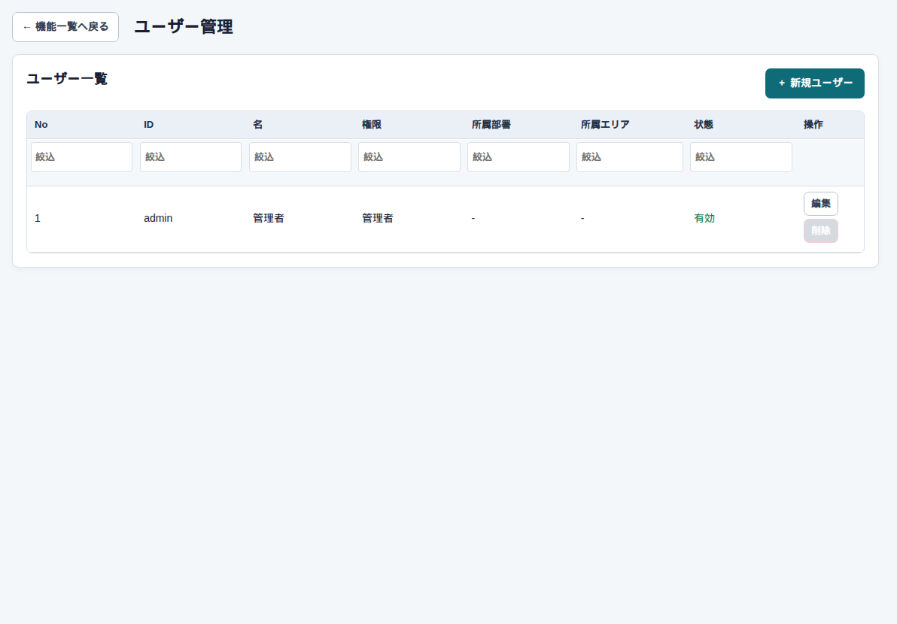

設定 → ユーザー管理
ユーザー管理
まず、この画面
ログインできる人と権限です。管理者とシステム担当者だけが開けます。

何をどこに入れるか
| ここ | 何をするか |
|---|---|
| ログインID / パスワード | 最初の画面で使う |
| 権限 | 管理者、総務、営業、パートナー、企業など |
| 企業ID / パートナーID | 企業・パートナー権限のとき、見える範囲を自分の分に限る |
気をつけること
実在のパスワードをマニュアルやリポジトリに書かないでください。検証用の初期IDだけを説明に使います。
設定 → ユーザー管理
ログインできる人と権限です。管理者とシステム担当者だけが開けます。

| ここ | 何をするか |
|---|---|
| ログインID / パスワード | 最初の画面で使う |
| 権限 | 管理者、総務、営業、パートナー、企業など |
| 企業ID / パートナーID | 企業・パートナー権限のとき、見える範囲を自分の分に限る |